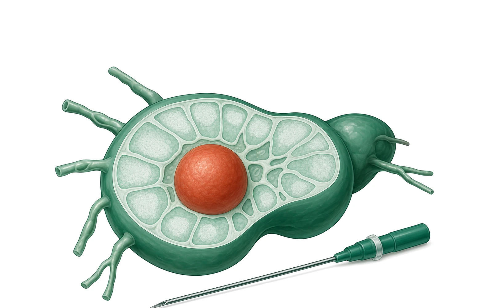
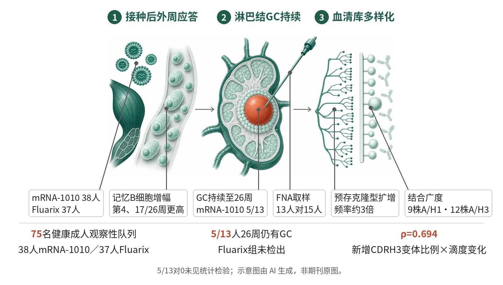

封面示意：剖开的绿色淋巴结，中央红色球体寓意生发中心，右下细针寓意淋巴结细针穿刺取样。图片由 AI 生成，非原文图片。
75名健康成人观察性队列中，mRNA-1010接种者的HA特异性记忆B细胞增幅在第4及17/26周高于Fluarix接种者；13人中5人26周仍检出生发中心反应。

- 接种mRNA-1010或Fluarix，采血与淋巴结FNA
- 第1周浆母细胞达峰；第4周记忆B细胞增幅更高
- GC B细胞5/13人持续至第26周
- 血清IgG疫苗诱导克隆型增多，预存克隆型扩增
- 对9株A/H1、12株A/H3结合增幅更高
示意图展示mRNA-1010接种后外周浆母细胞与记忆B细胞应答、腋窝淋巴结中持续至26周的生发中心（赤陶色），以及血清IgG克隆型多样化和对多株A/H1、A/H3的结合增幅。示意图由 AI 生成，依据原文结果绘制，非期刊原图，不代表分子比例。
研究背景与待解问题
季节性流感病毒持续抗原漂移，疫苗需逐年更新；既往暴露还可通过抗原印记使回忆应答对流行株的效力下降。生发中心（GC）可促进高亲和力B细胞克隆的选择，并产生浆细胞和记忆B细胞，因此被视为提升疫苗广谱性与持久性的靶点。
此前小鼠及新冠研究显示mRNA疫苗可诱导较强GC反应；但流感疫苗引发继发回忆应答，mRNA流感疫苗在人体能否产生更强GC应答、持续GC如何重塑分泌型IgG库，尚不清楚。本研究以超声引导淋巴结细针穿刺直接取样GC，并结合血清IgG蛋白质组学（Ig-seq）回答这一问题。
研究设计
WU397为观察性队列研究，非随机分配、非盲法，未做样本量预设，亦非为组间比较设计效能。2022–2024年北半球流感季共纳入75名20–50岁健康成人：38人接种mRNA-1010，37人接种四价裂解疫苗Fluarix，两者所含HA毒株略有不同。血样采集至接种后26周；mRNA-1010组13人、Fluarix组15人另接受超声引导淋巴结细针穿刺（FNA）。
Ig-seq纳入2022–2023季16人（mRNA-1010与Fluarix各8人），分析第0、4、17/26周亲和纯化的A/H3（A/Darwin/9/2021）特异性血清IgG；第0周已存在的克隆型记为“预存”，未检出者记为“疫苗诱导”。无方案预设主要终点，核心读出为GC持续性、记忆B细胞增幅及血清克隆型变化，组间比较用两侧Mann–Whitney U检验等。
核心结果
外周抗体与记忆B细胞
2022–2023季ELISpot显示HA特异性浆母细胞于接种后1周达峰；mRNA-1010组A/H1与A/H3特异性IgG+、IgA+浆母细胞频率显著高于Fluarix组，IgM+则Fluarix组更高，流感B型无显著差异。2022–2024季，mRNA-1010组血浆IgG对A/H1、A/H3的滴度增幅在第4周显著更高并维持至末次时点；HA特异性记忆B细胞增幅在第4周及17/26周显著更高。HAI滴度增幅两组在第4周及17/26周均无显著差异。
生发中心持续性与体细胞突变
FNA取样显示，两个流感季合计，仅mRNA-1010接种者5/13（约38%）在接种后26周（约6个月）仍检出HA特异性GC反应，Fluarix组两季均未见持续GC。3名mRNA-1010接种者共21对第1周浆母细胞/第26周GC B细胞同源克隆，后者IGHV与IGLV突变频率显著升高，但BLI与ELISA未见亲和力显著提高。
血清克隆型与克隆内扩增
Ig-seq每人检出67–186个A/H3特异性血清IgG克隆型；第4周预存克隆型占mRNA-1010组83.9%、Fluarix组86.2%。mRNA-1010组第4周疫苗诱导克隆型数显著更多，预存克隆型数相当，该差异到第17/26周减弱为略高。预存克隆型发生克隆内CDRH3扩增（第4周独特CDRH3肽数多于第0周）的比例，mRNA-1010组平均约为Fluarix组的3倍，其血清占比亦更高并持续至第17/26周。
结合广度与滴度关联
在2022–2023季队列（mRNA-1010 n=14，Fluarix n=15）中，微珠检测显示第4周mRNA-1010组血浆对9个A/H1和12个A/H3毒株的结合增幅显著更高（FDR校正q<0.05）；第26周（部分为17周样本）A/H1不再显著，A/H3仍显著。Ig-seq所见新增CDRH3肽变体比例与第4周抗A/H3滴度变化正相关（Spearman ρ=0.694）。
中和广度
微量中和试验中，针对同源（A/Darwin/9/2021）与异源（A/Thailand/8/2022）A/H3N2，两组中和滴度均上升，但增幅组间无显著差异。测序法中和检测中，mRNA-1010组第4周对13株A/H1N1中的11株增幅显著更高；对83株A/H3N2，多数毒株增幅较高但未达统计学显著。
机制解读
原文实验证明：流式与单细胞测序直接显示，mRNA-1010组GC反应可持续至26周，HA特异性GC B细胞中IgG+与IgA+均可检出，而Fluarix组以IgG+为主。HA特异性GC B细胞克隆与第1周浆母细胞重叠的中位比例，mRNA-1010组为87%，Fluarix组仅1人有重叠（20%）。
谱系树分析找到3个与GC B细胞同源、且CDRH3多样性扩增的A/H3血清IgG克隆型，均来自mRNA-1010组，Fluarix组为0；GC B细胞序列（第8–26周）位于与接种后CDRH3肽变体对应的亚分支。新增CDRH3肽变体比例与第4周滴度变化正相关（ρ=0.694），为相关性证据。
作者推测：作者推测，mRNA-1010可能向引流淋巴结递送更多抗原、延长抗原持续时间，并通过脂质纳米颗粒的自佐剂作用、膜结合抗原的更高价态及人源细胞糖基化模式，激活低频记忆B细胞；持续GC中的重复突变轮次可能为克隆多样化和结合广度提供“预见性突变”，重复接种是否拓宽记忆库仍属推测。
局限与不确定
- 研究为观察性、非随机，样本量未预设，仅限20–50岁健康成人，两疫苗所含HA毒株略有不同，平台效应与毒株差异无法分开；全部组间差异应视为关联性观察。
- FNA亚组仅mRNA-1010组13人、Fluarix组15人，GC持续性为5/13对0的计数比较，原文未报告其统计检验；最长随访26周，无保护效力或临床终点数据。
- 单细胞与谱系分析规模很小：scRNA-seq为4名mRNA-1010与3名Fluarix接种者，21对同源克隆来自3人，符合谱系条件的血清克隆型仅3个；Ig-seq仅涉及A/H3、每组8人。
- 功能证据有限：HAI与A/H3N2微量中和无显著组间差异，83株A/H3N2中和增幅未达显著，作者认为可能因样本量有限；持续GC的成因（作者称尚未阐明）及其与广度的因果联系均未被直接检验。
临床/产业意义
若这些关联在更大、随机化的研究中得到重复，mRNA-1010这类mRNA流感疫苗可能通过延长GC活动来拓宽血清IgG库的结合谱，这与普适流感疫苗所需的广谱结合方向一致。
目前证据限于免疫学读出：HAI与A/H3N2微量中和均无组间差异，尚不能据此推断临床保护。FNA联合Ig-seq可作为比较疫苗平台对GC持续性与血清IgG库影响的方法框架；两疫苗的HA毒株不同，比较结论需谨慎解读。